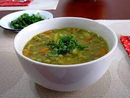

Bienvenido a la Cocina de Juan!

- Limpiar y Pelar Las Verduras
- Poner a calentar el agua para hervir los vegetales.
- Una vez alcanzaddo el hervor agregar las lentejas desidratadas junto a la verduras
- Ddejar reducir el aguya hasta un poco menos dde la mitad
- Agregar crema de leche para espesar
- Servir y decorar con la cebolla de verdeo encima